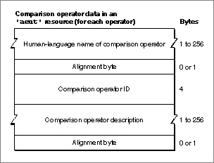

Comparison Operator Data
Each item in the array of comparison operators for a suite includes information about a single comparison operator. Figure 8-9 shows the format of the comparison operator data in an'aeut'or'aete'resource.Figure 8-9 Structure of comparison operator data in an
- Note
- The AppleScript component currently doesn't use information about comparison operators. Other scripting components may use this information.
'aeut'or'aete'resource
The data for each comparison operator consists of the following items:
"Extending the Standard Suites," which begins on page 8-21, includes sample Rez input for an
- The human-language name of the comparison operator. This is a Pascal string that can include any characters, including uppercase and lowercase letters and spaces. When the resource description is compiled, the resource compiler pads the string and aligns the next field on a word boundary.
If the
'aete'resource specifies the name of a comparison operator as an empty string, the scripting component looks up, in its'aeut'resource, the comparison operator name and other comparison operator data that correspond to the specified comparison operator ID. If the'aete'resource specifies a name other than the name provided by the'aeut'resource for the same comparison operator ID, the scripting component uses the new name with the same comparison operator data from the'aeut'resource. You should specify an empty string for the name of any standard comparison operator that you list explicitly in an'aete'resource.- The four-character comparison operator ID for the property. If the
'aete'resource specifies a standard comparison operator name and a comparison operator ID other than the comparison operator ID for the equivalent standard comparison operator, the scripting component uses the new comparison operator ID with the standard comparison operator data for the specified name. You should specify the standard comparison operator ID for any standard comparison operator that you list explicitly in an'aete'resource.- A human-language description of the comparison operator. This is a Pascal string that can include any characters. When the resource description is compiled, the resource compiler pads the string and aligns the next field on a word boundary.
'aete'resource that adds a comparison operator to a standard suite.